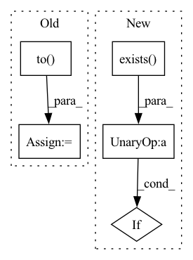

Pattern ID :31452
Before Change
def consistency_feature_importance(args: DictConfig):
device = torch.device("cuda") if torch.cuda.is_available() else torch.device("cpu")
pert_percentages = [5, 10, 20, 50, 70, 80, 90, 100]
perturbation = GaussianBlur(3, sigma=1).to( device)
// Prepare model
torch.manual_seed(args.seed)
assert args.backbone in ["resnet18", "resnet34"]After Change
torch.manual_seed(args.seed)
model_path = Path.cwd() / f"models/simclr_{args.backbone}_epoch{args.epochs}.pt"
// Fit a model if it does not exist yet
if not model_path.exists() :
if not (Path.cwd() / "models").exists():
os.makedirs(Path.cwd() / "models")
fit_model(args)In pattern: SUPERPATTERN
Frequency: 3
Non-data size: 5
Instances Fragment ID: 92102629
Project Name: jonathancrabbe/label-free-xai
Commit Name: 5ec7cb757f497d1cef0817442a377b4cf2e5d168
Time: 2022-05-19
Author: jonathan.cr1302@gmail.com
File Name: experiments/cifar10.py
M Class Name: AnonimousClass
N Class Name: AnonimousClass
M Method Name: consistency_feature_importance(1)
N Method Name: consistency_feature_importance(1)
M Parent Class:
N Parent Class:
M File Name: experiments/cifar10.py
N File Name: experiments/cifar10.py
M Start Line: 25
M End Line: 79
N Start Line: 36
N End Line: 98
Before Change
print(device)
dbnet = DBTextModel().to(device)
dbnet.train()
criterion = DBLoss(alpha=1, beta=10, negative_ratio=3,
reduction="mean").to( device)
db_optimizer = torch_optim.Adam(dbnet.parameters(),
lr=0.001,
weight_decay=0.0,
amsgrad=False)After Change
// setup log folder
log_dir_path = os.path.join(cfg.meta.root_dir, "logs")
if not os.path.exists(log_dir_path) :
os.makedirs(log_dir_path)
tfb_log_dir = os.path.join(log_dir_path, str(time.time()))
logger.info(tfb_log_dir) Fragment ID: 92102630
Project Name: huyhoang17/db_text_minimal
Commit Name: 1ccb73f6566551e5b6640c2b14d69b2a3d2334d8
Time: 2020-06-02
Author: hoangphan0710@gmail.com
File Name: src/train.py
M Class Name: AnonimousClass
N Class Name: AnonimousClass
M Method Name: main(1)
N Method Name: main(0)
M Parent Class:
N Parent Class:
M File Name: src/train.py
N File Name: src/train.py
M Start Line: 58
M End Line: 250
N Start Line: 62
N End Line: 283
Before Change
// Using UNet
// For most of the Active Learning techniques, this model is the same one we used for inference
model = UNet(
dimensions=3,
in_channels=1,
out_channels=2,
channels=(16, 32, 64, 128, 256),
strides=(2, 2, 2, 2),
num_res_units=2,
norm=Norm.BATCH,
dropout=0.2).to( self.device)
model.load_state_dict(torch.load(self.bestModelPath))
model.eval()
After Change
return super().__call__(request, datastore)
def get_model(self, device):
if not os.path.exists(os.path.join(self.path)) :
raise MONAILabelException(MONAILabelError.MODEL_IMPORT_ERROR, f"Model Path ({self.path}) does not exist")
if self.network: Fragment ID: 92102627
Project Name: project-monai/monailabel
Commit Name: 287d4c1eafd3ab1e364e89a4bf9f6e650c68ac77
Time: 2021-04-29
Author: salle@nvidia.com
File Name: sample-apps/segmentation_heart/lib/activelearning.py
M Class Name: MyActiveLearning
N Class Name: MyActiveLearning
M Method Name: get_model(2)
N Method Name: get_model(1)
M Parent Class: ActiveLearning
N Parent Class:
M File Name: sample-apps/segmentation_heart/lib/activelearning.py
N File Name: sample-apps/segmentation_heart/lib/activelearning.py
M Start Line: 40
M End Line: 53
N Start Line: 63
N End Line: 75